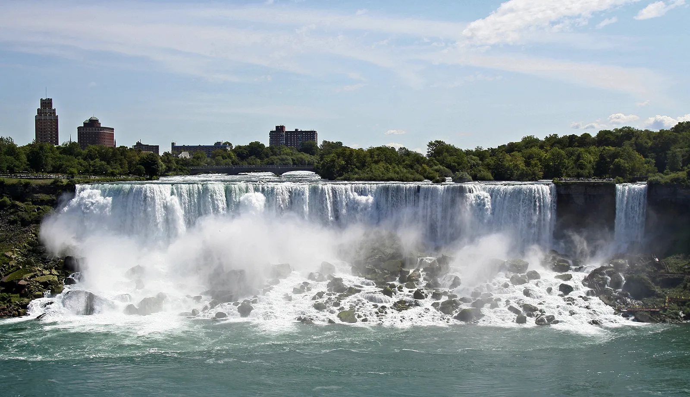
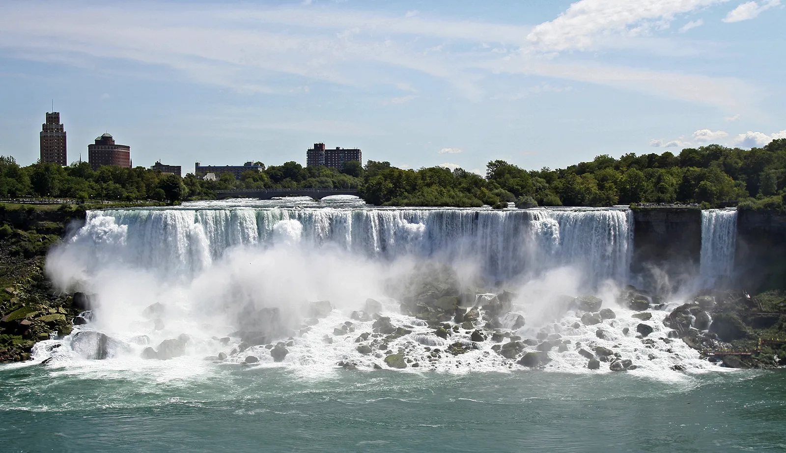

Yellowstone National Park


Geographical Location: North America
Yellowstone National Park is a natural mosaic of geothermal wonders, from spouting geysers, such as the iconic Old Faithful, to bubbling hot springs painting the landscape with vibrant colors. It's a place where the earth breathes, and the air is filled with the scent of pine and the distant sound of howling wolves.
As America's first national park, Yellowstone is a sanctuary of wilderness and wildlife. It stretches over vast forests, expansive lakes, and majestic canyons, with the Yellowstone River carving its way through the rugged terrain. It's a realm where grizzly bears roam, bison graze peacefully, and the beauty of the untamed wild prevails.
(It is astonishingly beautiful! What a pity I hadn't been there before, I will definitely go there once before graduate!)
Photo Gallery


Wait...Is that a buffalo? I thought that was a mountain!
This boiling hot spring looks so fascinating, wanna have a rest?
Niagara Falls
 

Geographical Location: North America
This is the majestic Niagara Falls, where torrents of water cascade over the precipice, creating a mesmerizing veil of mist and a faint, delicate rainbow arching in the spray.
A dramatic interplay of light and water unfolds at Niagara Falls, with the powerful rush of the falls contrasted against a tranquil sky, evoking a sense of nature's grandeur and raw beauty.
(It seems that there's some place even cooler than AA)
Photo Gallery


Though there's no voice in this video, can't u hear the Niagara Falls roaring?

Tajmahal


Geographical Location: Asia
The breathtaking TajMahal, a monumental testament to love, standing tall with its iconic white marble domes and minarets against a dusky sky.
This serene twilight view of the Taj Mahal, with its symmetrical beauty and reflection upon the water, captures the enduring allure of one of the world's most celebrated architectural marvels.
Photo Gallery